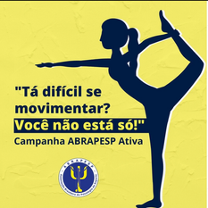
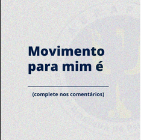

Durante a campanha de verão da ABRAPESP ATIVA, postamos nas redes sociais, uma pesquisa para obter respostas sobre o que é MOVIMENTO.
O objetivo da campanha foi levar mais informações sobre o movimento e estimular, cada vez, mais uma vida ativa fisicamente, desvinculada de padrões de beleza ou em busca de objetivos extrínsecos que distanciam o prazer do exercício.
⠀
As respostas mais frequentes, foram associar movimento á vida, existência, cuidado, expressão. Mas, neste momento, com a restrição imposta pela pandemia, circular fora de casa, tornou a vida mais difícil. Fazendo-nos reinventar atividades, nos mantendo ativos e impedindo aumentar os motivos de transtornos mentais durante a pandemia.
⠀
Pense em movimentar-se como forma primordial de uma vida saudável. Encontre alternativas para suprir as necessidades de movimento mesmo que dentro de casa. Descubra atividades prazeirosas. ⠀
⠀
E ai? Você já pensou nisso? Acompanhou nossa campanha?